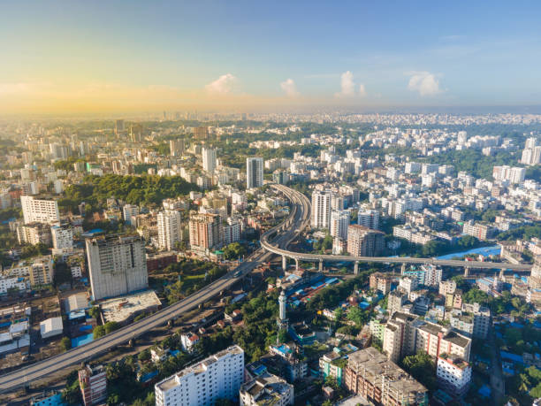
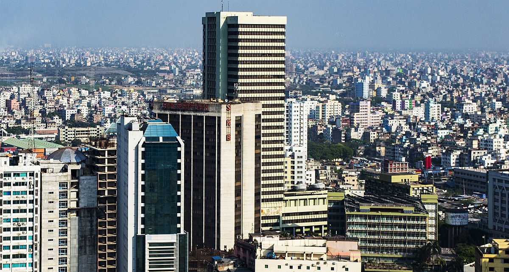
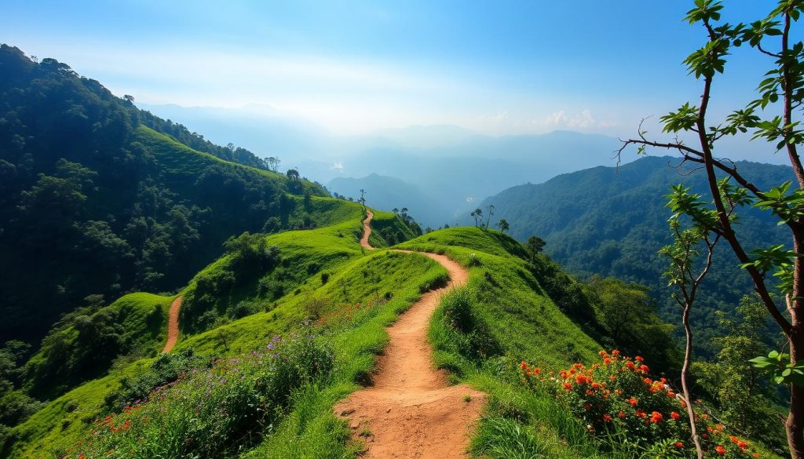
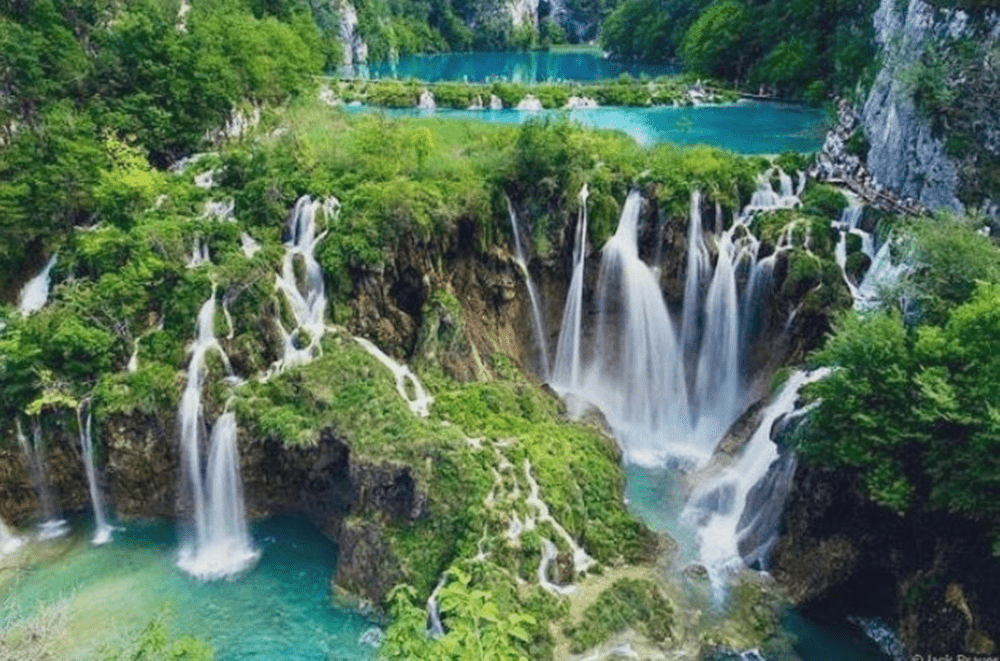
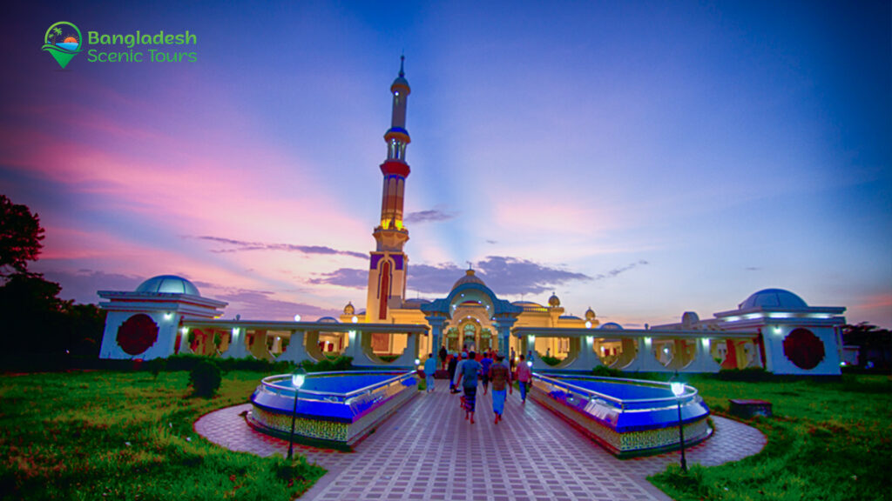
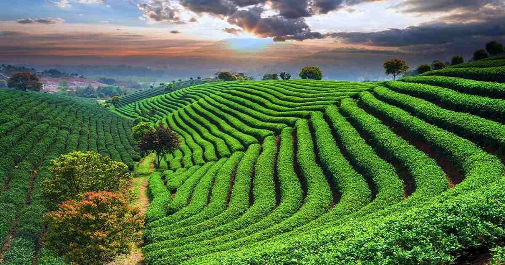
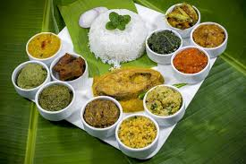
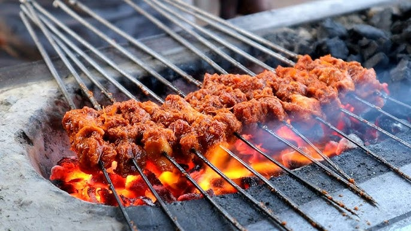
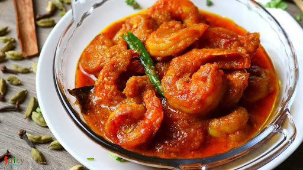

Dhaka（ダッカ）
ムガル要塞やピンクの宮殿、川の暮らし、絶品ストリートフード。
バングラデシュは南アジアに位置し、大河がつくる肥沃なデルタに抱かれた国です。活気ある首都ダッカ、世界最大級のマングローブ林スンダルバンス、そしてコックスバザールの広大な砂浜まで、温かなホスピタリティと豊かな食文化が息づいています。
各地方の特徴をタップして確認。

商業・教育・首都機能 ─ 国の心臓部。

海と港 ─ ビーチと活気あるハーバー。

スンダルバンス＆シャットゴンブジュへのゲート。

マンゴーの里 ─ 絹織物と川辺の文化。

川と米 ─ 水上マーケットと緑の田園。

茶園とシュリーマンガル ─ 緑の丘陵地帯。

香り高い米と漬け込み肉のごちそう。

パリッとした殻に酸味のある具を詰めた屋台の定番。

マスタードと合わせる国民的な川魚。

やさしい甘さの伝統スイーツ。

オールド・ダッカ発祥、スパイス香る牛肉ごはん。

野菜や魚を潰して唐辛子で和えた家庭の味。

じっくり煮込んだスパイシーな牛肉カレー。

香ばしく焼いた串肉。ナンと相性抜群。
冬の名物、米粉で作る素朴なスイーツ。

海老をココナツミルクでまろやかに。
国民的人気。熱気あふれるスタジアムと情熱的なファン。

校庭から街リーグまで。スピード感とテクニックが魅力。
国技。俊敏さとチームワークで村の大会も大盛り上がり。
スピードと精密さが光る、身近で奥深いスポーツ。
主要な観光地にピンを配置。拡大・ドラッグで自由に探索できます。
一般的には乾季の10月〜3月です。6〜9月は高温・多雨になります。
公用語はベンガル語ですが、主要都市やホテル、ガイドは英語を理解します。
多くの国籍で必要です。最新の公式情報を必ず確認してください。
バングラデシュの旅が素敵な思い出になりますように。